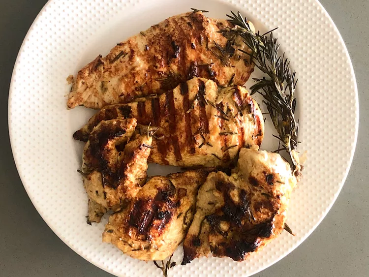

Grilled Chicken Breast

Description
These quick and easy grilled rosemary chicken breasts are full of exceptional flavor. The rosemary and garlic marinade is brightened with lemon juice. It's a must-try for summer.
Ingredients
- 8 cloves garlic, minced
- 3 tablespoons olive oil
- 2 tablespoons minced fresh rosemary
- 1 ½ tablespoons Dijon mustard
- 1 ½ tablespoons lemon juice
- ¼ teaspoon ground black pepper
- ⅛ teaspoon kosher salt
- 4 boneless, skinless chicken breast halves
Steps
- Whisk garlic, oil, rosemary, mustard, lemon juice, pepper, and salt together in a bowl. Reserve 2 tablespoons for basting.
- Place chicken breasts in a resealable plastic bag. Pour remaining garlic mixture over top; seal the bag and massage marinade into chicken. Let stand for 30 minutes at room temperature.
- Remove chicken from marinade and shake off excess. Discard remaining marinade.
- Cook chicken on the preheated grill for 4 minutes. Turn, baste with reserved marinade, and continue to grill until no longer pink in the center and the juices run clear, about 5 minutes. An instant-read thermometer inserted into the center should read at least 165 degrees F (74 degrees C).
- Transfer chicken to a plate and cover with foil. Let rest for at least 2 minutes before serving.